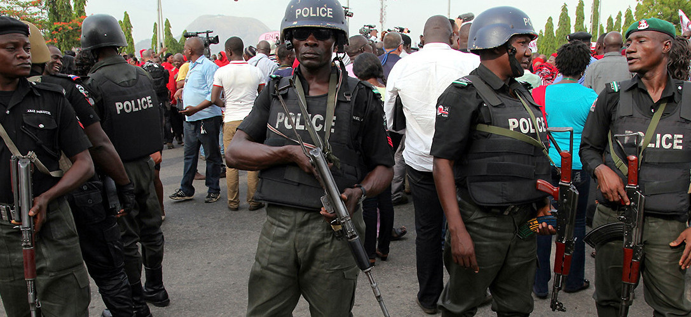

The GEJ Grassroots Volunteers for Development (GEJ-GVD).
OUR ACTIVITIES SO FAR UNDERTAKEN (PHASE 1 AND 2)
- Actively participated in the PDP Zonal Unity Rally held in North-Central (Kaduna) with 30 members.
- Actively participated in the PDP Zonal Unity Rally held in North-West (Kano) with 30 members.
Actively participated in the PDP Zonal Unity Rally held in North-East (Bauchi) with 30 members. - Actively participated in the PDP Zonal Unity Rally held in South-East (Enugu) with 62 members.
- Actively participated in the PDP Zonal Unity Rally held in South-South (Benin, Edo State) with 100 members.
- Actively participated in the PDP Zonal Unity Rally held in South-West (Lagos City, Lagos State) with 50 members.
- Actively participated in welcoming the representative of President Goodluck Ebele Jonathan at Uyo Airport and led other political solidarity groups to Ukana for the ground- breaking ceremony of the Federal Polytechnic, Ukana, Akwa Ibom State with 112 members. The Hon. Minister of State for Education, Hon. Chief Nyesom E. Wike represented the President at the ceremony.
- Conducted Senatorial Sensitisation Rallies to mobilise the rural communities in Akwa Ibom State and Cross River State ahead of the next general elections for the youths to embrace peace and non-violence as well as to avoid thuggery and the destruction of public property between 18-20th July, 2014 at Eket, Ikot Ekpene and Uyo Senatorial District. Also carried out Senatorial Sensitisation Rallies from 23-27th July, 2014 at Northern, Central and Southern Senatorial Districts in Cross River State.
- Organised ICT Skills Acquisition Programme for one week for 30 Young Secondary School Leavers in Abua-Odual, Omuma and Ahoada-East of Rivers State from 22 -28th May and empowered 12 of the participants that obtained excellent grades with complete computer sets and generators.
- Conducted the pre-mobilisation of Political Solidarity Organisations (PSOs) based in Cross River State at Calabar on 19th July, 2014 and inaugurated the Bayelsa and Cross River Executive Councils in Calabar at the end of the Rally/Sensitisation Seminar. The Theme was: “Why Jonathan Deserves Re-Election for Second Term Service in 2025
- Organised pre-sensitisation rally for youths in Imo State to participate in the Voters’ Review Exercise (VRE) of the Independent National Electoral Commission (INEC) so as to be able to exercise their right of franchise and then counselled them to ignore inducements to sell their voter’s cards
- Mobilised 20 members from the six-geopolitical zones to participate in the Endorsement Rally for the President fixed for 31st July, 2014 in Abuja and organised by the Niger Delta Youth Leaders’ Council, which was later postponed.
- Actively participated in the South-South tour of the National Chairman of the Peoples Democratic Party (PDP), Alhaji (Dr.) Adamu Mu’azu in Uyo, Akwa Ibom State with 411 members.
- Actively participated in the South-South tour of the National Chairman of the People’s Democratic Party (PDP), Alhaji (Dr.) Adamu Mu’azu in Calabar, Cross River State with 282 members.
- Actively participated in the official visit of Mr. President for the commissioning of Aquo Gas Facility and other projects on 14th August, 2014 in different locations in Akwa Ibom State.
- Participated, as the only invited external solidarity organisation in the Press Conference organised by South-South Chiefs and Elders’ Council (SSCEC), held in Abuja on Monday, 18th August, 2014 where President Goodluck Ebele Jonathan was adopted as its sole Presidential candidate and endorsed for re-election come 2015.
- Received official approval for partnership from His Excellency, Hon. Boni Haruna, Hon. Minister of Youth Development who also commended and endorsed our organisation on 28th August, 2014 during a courtesy visit on him in his office in Abuja.
- Produced 400 copies of quality Programme of Events, two joint banners and mobilised 37 of our members across the country to actively participate in the Ceremony of Triple Honours organised by our partner-organisation – South-South Chiefs and Elders’ Council, Abuja on Thursday, 4th September, 2014 where Dr. Goodluck Ebele Jonathan was adopted and endorsed as our SOLE PRESIDENTIAL CANDIDATE for 2015 Presidential election.
- Actively participated with 21 members across the nation at the First National Summit for Goodluck Support Groups (GSGs) held at Eagles’ Square, Abuja on Tuesday, 16th September, 2014.
- Organised an expanded Stakeholders’ Sensitisation Meeting (SSM) with traditional, religious and political leaders from Ikono/Ini Federal Constituency in Akwa Ibom State, which was hosted by our active supporter, Hon. Jonathan M. Umana held at Ikono Village on Wednesday, 24th September, 2014 where nine serving councilors also attended.
- Hosted a General Meeting of our organisation where 14 new members were received and campaign sensitisation materials distributed. The turn-out of members across Akwa Ibom State was unprecedented despite the short notice.
- Actively participated in a mass rally and reception where over 500 persons in Khana Local Government Area, Ogoni, Rivers State, led by Sir Hon. Gregory B. Nwidam and Sir Barrister Festus L. Nwamae, defected from to the People’s Democratic Party (PDP) from the drowning All Progressives’ Congress (APC) at Ward 10 (Bane Town) on Sunday, 28th September, 2014. It was jointly organised by Ward 10 PDP Elders’ Forum, Ward EXCO and Sir Hon. Gregory Nwidam. Bane is the hometown of Hon. Dominic Saro-Laka, JP, Ph.D, our Special Adviser and member of the Ward 10 PDP Elders’ Forum.
- Actively participated in the National Summit for Good Governance and Endorsement of President Goodluck Ebele Jonathan for re-election organised by our partner-body -Progressive Friends Foundation (PFF) held at the National Women Development Centre, Abuja on 2nd October, 2014 where the First Lady of Nigeria, Her Excellency, Dame Patience Ibifaka Jonathan was inducted as Grand Patron of PFF.
- Organised Stakeholders’ Sensitisation Meeting (SSM) for women in Sanga LGA of Kaduna State at Sanga Town where a vibrant politician, Hon. Mrs. Comfort Amwe who is also the current Commissioner for Women’s Affairs in Kaduna State addressed our members on the need to re-elect GEJ in 2015 and received 62 new members.
Group of GEJ-GVD during rally

Police officers on duty during GEJ-GVD mega rally
Massive turn out during theGEJ-GVD rally
(UPDATE OF OUR ACTIVITIES FROM 4TH SEPTEMBER, (2014)
GEJ GRASSROOTS VOLUNTEER FOR DEVELOPMENT
His Excellency GEJ Adressing members of GEJ-GVD during rally